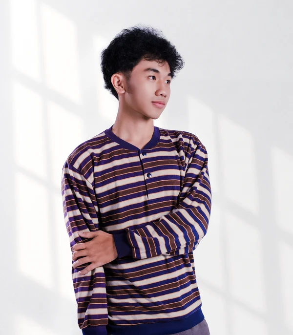
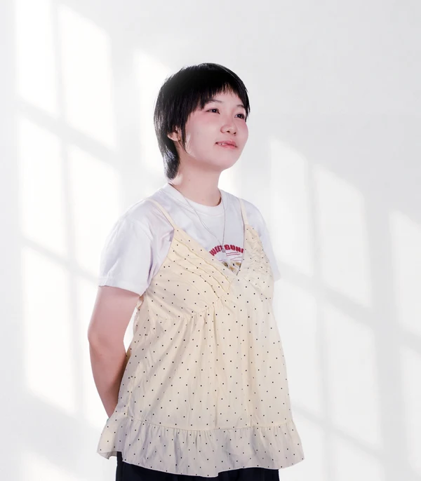
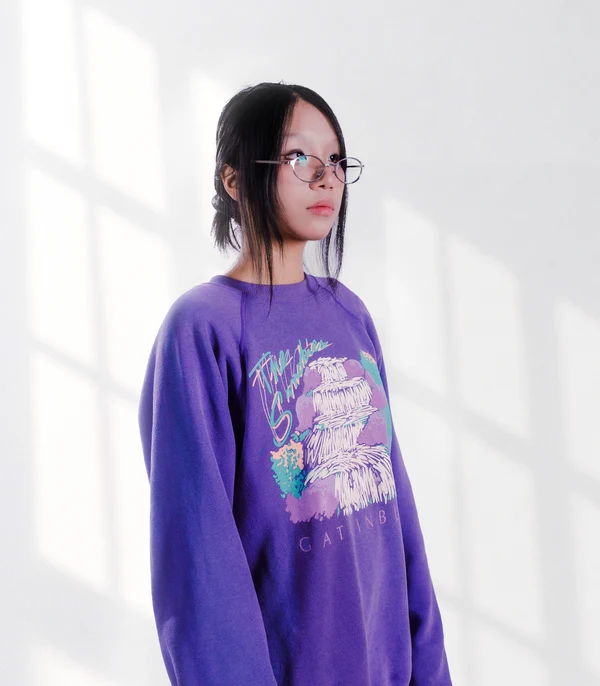
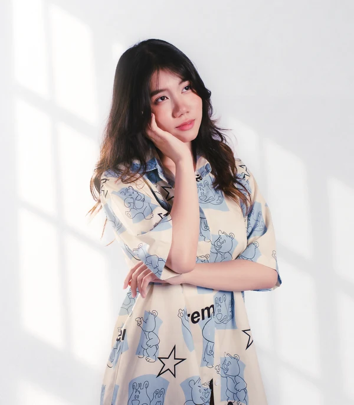

KILN / DEVELOPER
Được làm bởi chính những người cần công cụ này.
DAAD StopMotion được phát triển bởi KILN — một nhóm sáng tạo nhỏ tập trung vào những công cụ thực tế cho sản xuất frame-by-frame.

KILN / TEAM PHOTOFORMERLY KILN MOTION
Đằng sau DAAD StopMotion
KILN
KILN là nhóm phát triển đứng sau DAAD StopMotion. Phần mềm được xây từ trải nghiệm stop-motion, làm phim và mỹ thuật số thực tế thay vì từ một mẫu productivity chung chung.
Lịch sử dự án
KILN MotionOrigin / Early development
DAAD StopMotionCurrent product identity
5.0.0Current release track
Keep your Identity.
Liberate your Nature.
Rồi thêm một frame nữa.
|
CREATOR / FRAME 001
Creator & Developer
Định hướng sản phẩm, thiết kế và phát triển DAAD StopMotion.
Lê Triệu Phi
Định hướng sản phẩm, thiết kế và phát triển DAAD StopMotion.

Nguyễn Đăng Khoaa 
Phan Thảo Nguynn 
Lâm Lê Mỹ Như 
Nguyễn Ngọc Khánh Linhh